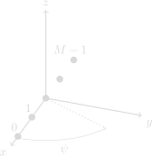
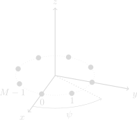
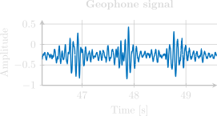

Direction of Arrival Estimation
for Wildlife Protection
Supervisor: Fredrik Gustafsson Co-supervisor: Gustaf Hendeby
Gustav Zetterqvist
Licentiate Seminar
2024-10-18
Examiner: Svante Gunnarsson
Background
- We are entering the sixth mass extinction.
- Caused by human population growth and
increased consumption. - Elephant population has decreased by 98%
since the 1500s. - Decreasing rate between 2010-2014 was 8%.
Background
Nyhetsmorgon 10th of October
Example 1 - Elephant tracking
- Human-elephant conflict endangers people, property, and crops globally.
- A geophone-based system detects seismic waves from elephant footsteps to estimate direction.
- Real-time tracking helps warn residents and guide elephants back to their habitats.
Example 1 - Elephant tracking
- Human-elephant conflict endangers people, property, and crops globally.
- A geophone-based system detects seismic waves from elephant footsteps to estimate direction.
- Real-time tracking helps warn residents and guide elephants back to their habitats.
Example 1 - Elephant tracking

Example 2 - Acoustic Surveillance for Savanna Protection
- Wildlife protection requires localizing poachers and analyzing sound events on the savanna.
- Microphone arrays estimate the direction of rifle shots to locate poachers.
- Key sounds monitored: elephant trumpets, a woman's scream, and police sirens.
- The system offers a complete overview, enhancing response and conservation efforts.
Outline
- Problem Formulation
- Classical Direction of Arrival
- Elephant DOA
- Directional Sensitivity DOA
- Conclusions & Future Work
Problem Statement
- How can a conventional DOA estimator be used to estimate the DOA of elephant footsteps? And how can we differentiate between an elephant footstep and other seismic signals?
- How can the directional sensitivity of the sensors be utilized to estimate the DOA, and how should the directional sensitivity be modeled?
Problem Statement
- What are the theoretical limits of the directional sensitivity based DOA estimator, and how does the frequency content of the signal affect the directional sensitivity?
- How does the directional sensitivity based DOA estimate compare to state-of-the-art methods using narrowband and realistic signals?
Classical DOA Estimation
Classical DOA Estimation
$\pmb{v}(\psi)$: direction vector
$c$: speed of signal
$\psi$: DOA
Classical DOA Estimation
$\pmb{v}(\psi)$: direction vector
$c$: speed of signal
$\psi$: DOA
Array Structures
 Estimation Metods
- Delay-and-Sum Beamformer
- MUSIC
- Bartlett
- MVDR (Capon)
- MCCC
Delay-and-Sum Beamformer
\[ \mbox{Signal model}: y_m[l] = s\left[l - \delta_m\left(\psi\right)\right] + e_m[l] \]
Delay-and-Sum Beamformer
\[ \mbox{Signal model}: y_m[l] = s\left[l - \delta_m\left(\psi\right)\right] + e_m[l] \]
Delay-and-Sum Beamformer: \[ \hat{\psi} = \arg\max_{\psi} \sum_{l=1}^N \Bigg| \frac{1}{M} \sum_{m=1}^{M} y_m[l+\delta_m(\psi)]\Bigg|^2 \]
Delay-and-Sum Beamformer
\[ \mbox{Signal model}: y_m[l] = s\left[l - \delta_m\left(\psi\right)\right] + e_m[l] \]
Delay-and-Sum Beamformer: \[ \hat{\psi} = \arg\max_{\psi} \sum_{l=1}^N \Bigg| \underbrace{\frac{1}{M} \sum_{m=1}^{M} y_m[l+\delta_m(\psi)]}_{y_{DS}[l,\psi]} \Bigg|^2 \]
Delay-and-Sum Beamformer
Direction of Arrival Estimation
Method Comparision


Application - Elephant DOA
[1] Zetterqvist, et al. Elephant DOA Estimation using a Geophone Network. In FUSION 2023.Signal Model
Signal Model
\[ y_m(t) = \sum_n \class{orangeColor}{s_m\left(t-\kappa_n\right)} + e_m(t) \mathrm{,}\]
$s_m(t-\kappa_n)$: $n$th footstep for geophone $m$
$\kappa_n$: time for footstep $n$
$e_m(t)$: ambient noise
Experimental setup
Experimental setup

Signal Characteristics
Signal Characteristics
Signal Characteristics

Noise Characteristics
Elephant Footstep Detection
Pre-processing
- Bandpass filter between 4 and 30 Hz
- Hanning Window
Signal Feature
- Fast Fourier transform.
- Normalized amplitude.
- Frequency content between 8 and 23 Hz.
Detection Results
Tracking Results
Tracking Results
Summary - Elephant
- Detection and DOA estimation of elephants.
- Works well within 15-40 meters.
- Direction of arrival estimate is accurate.
Directional Sensitivity DOA
[2] Zetterqvist, et al. Using Received Power in Microphone Arrays to Estimate Direction of Arrival. In ICASSP 2023.[3] Zetterqvist, et al. Directional Sensitivity-Based DOA Estimation Using a Fourier Series Model.
IEEE Sensors Journal.
Motivation
- Classical methods rely on time-differences.
- Requries separation of the sensors in space.
- Placing them to far appart leads to ambiguity in DOA.
- Placing them to close decrease DOA resolution.
Motivation
General Idea
General Idea

General Idea

General Idea
General Idea
General Idea
General Idea
General Idea
Signal model
\[ y_m[l] = s[l-\delta_m] + e[l] \] \[ y_m[l] = s_m[l] + e[l] \] \( y_m[l] = s_m[l] + e[l] \), \(\quad e[l] \sim \mathcal{N}(0,\sigma_m^2) \) \[ P_m = \sum_{l=1}^{L} y_m^2[l]\] \[ P_m = \underbrace{\frac{1}{L} \sum_{l=1}^L s_m^2[l]}_{ P^s_m} + \underbrace{\frac{1}{L} \sum_{l=1}^L 2 s_m[l] e_m [l]}_{P^{sw}_m} + \underbrace{\frac{1}{L} \sum_{l=1}^L e_m^2[l]}_{v_m} \mathrm{,} \] \[ P_m =\underbrace{\frac{1}{L} \sum_{l=1}^L s_m^2[l]}_{ P^s_m} + \underbrace{\frac{1}{L} \sum_{l=1}^L 2 s_m[l] e_m [l]}_{P^{sw}_m \rightarrow 0} + \underbrace{\frac{1}{L} \sum_{l=1}^L e_m^2[l]}_{v_m} \mathrm{,} \] \[ P_m =\underbrace{\frac{1}{L} \sum_{l=1}^L s_m^2[l]}_{ P^s_m} + \underbrace{\frac{1}{L} \sum_{l=1}^L 2 s_m[l] e_m [l]}_{P^{sw}_m \rightarrow 0} + \underbrace{\frac{1}{L} \sum_{l=1}^L e_m^2[l]}_{v_m \sim \mathcal{N}\left(\sigma_m^2,\frac{2\sigma_m^4}{L}\right)} \mathrm{,} \]Signal model
\( P_m = P_m^s + v_m \)\[ P_m(\psi) = \alpha g_m h(\psi,\boldsymbol{\theta}_m) + v_m \]
\(\alpha\): absolute power level\(g_m\): gain of microphone \(m\)
\(h(\psi,\boldsymbol{\theta}_m)\): directivity pattern
Fourier series Model
\[ P_m(\psi) = \alpha g_m h(\psi,\boldsymbol{\theta}_m) + v_m \]
\begin{align} h\left(\psi,\boldsymbol{\theta}_m\right)& = \theta^m_{0} + \sum_{d=1}^D \theta^m_{d,c} \cos(d\psi)+\theta^m_{d,s} \sin(d\psi) \nonumber \end{align}Training
The parameters \(\boldsymbol{\theta}_m, g_m\) are estimated by minimizing the error between the predicted and the measured power. \[\begin{aligned} & \underset{\boldsymbol{\alpha,\, g_{1:M},\, \theta_{1:M}}}{\text{minimize}} & & \sum_{m=1}^M \frac{1}{\eta_m}\sum_{k=1}^K \Big( P_m(\psi_k) - \left(\alpha g_m h\left(\psi_k, \boldsymbol{\theta}_m\right) + \sigma_m^2\right) \Big)^2 \\ & \text{subject to} && \alpha > 0 \\ &&& g_1 = 1 \\ &&& h\left(\psi_m,\boldsymbol{\theta}_m\right) = 1, \qquad \forall \, m = 1,2, \dots , M , \end{aligned}\]Experimental Setup
Experimental Setup
19 different sounds
| No. | Sound | Signal |
|---|---|---|
| 1 | Wideband noise | |
| 2-11 | Sinusoids | |
| 12 | Hovering drone | |
| 13 | Elephant trumpet | |
| 14 | Police Siren |
19 different sounds
| No. | Sound | Signal |
|---|---|---|
| 15 | Woman Scream | |
| 16 | Wideband noise low | |
| 17 | Wideband noise high | |
| 18 | Gunshot | |
| 19 | Background noise |
Data summary
| Training | Estimation | |||
|---|---|---|---|---|
| Signals | # of angles | Signals | # of angles | |
| Anechoic | Signal 1 | 24 | Signal 1-17 | 24 |
| Signal 18 | 8 | |||
Data summary
| Training | Estimation | |||
|---|---|---|---|---|
| Signals | # of angles | Signals | # of angles | |
| Anechoic | Signal 1 | 24 | Signal 1-17 | 24 |
| Signal 18 | 8 | |||
Data summary
| Training | Estimation | |||
|---|---|---|---|---|
| Signals | # of angles | Signals | # of angles | |
| Anechoic | Signal 1 | 24 | Signal 1-17 | 24 |
| Signal 18 | 8 | |||
| Outdoor | - | - | Signal 1-17 | 10 |
Fourier Series Order

DOA Estimation
\begin{align} \hat{P}_m(\psi) &= \alpha \underbrace{\hat{g}_m h(\psi,\boldsymbol{\hat{\theta}}_m)}_{\hat{h}_m(\psi)} + \sigma^2_m \\ \end{align} \[\begin{align} \hat{\psi} &= \arg\max_{\psi} \frac{\left( \sum_{m=1}^M \hat{h}_m(\psi) (P_m-\sigma_m^2) \right)^2}{\sum_{m=1}^M \hat{h}_m^2(\psi)} \\ \hat{\alpha} &= \frac{\sum_{m=1}^M \hat{h}_m(\hat{\psi}) (P_m-\sigma_m^2)}{\sum_{m=1}^M \hat{h}_m^2(\hat{\psi})} \end{align}\]Result
Cramr-Rao Lower Bound
Noise distribution
\[ P_m =\alpha g_m h(\psi,\boldsymbol{\theta}_m) + v_m , \quad v_m \sim \mathcal{N}\left(\sigma_m^2,\eta_m\right) \]Noise distribution
Noise distribution
Noise distribution
Noise distribution
Noise distribution
Introduce model in dB scale as
\[ \bar{P}_m = \bar{\alpha} + \bar{g}_m + h(\psi, \bar{\boldsymbol{\theta}}_m) + \bar{v}_m , \quad \bar{v}_m \sim \mathcal{N}\left(\bar{\sigma}_m^2, \bar{\eta} \right) \]Frequency Dependency
Frequency Dependency
Frequency Dependency
Results
Results
Results
Results
| Signal No. | Proposed | MUSIC | MVDR | MCCC | |
|---|---|---|---|---|---|
| Anechoic | 1-17 | 11.62 | 60.04 | 27.07 | 0.99 |
| 1, 12-17 | 0.45 | 15.33 | 22.51 | 0.79 | |
| 18 | 1.42 | 9.68 | 92.43 | 0.58 | |
| Outdoor | 1-17 | 5.14 | 74.25 | 76.08 | 42.03 |
| 1, 12-17 | 3.10 | 29.15 | 59.23 | 2.78 |
Cramr-Rao Lower Bound
Cramr-Rao Lower Bound

Summary - Directional Sensitivity
- DOA Estimation Method: Utilizes directional sensitivity; requires calibration.
- Successful Experiments: Eight-microphone array estimated DOA for 18 signal types, effective for frequencies above 1000 Hz.
- Robust Performance: Maintains accuracy over time and temperature; enables high-resolution DOA estimation with smaller arrays.
Conclusions
- Elephant foosteps have a unique signature that can be detected using a geophone array.
- A conventional Delay-and-Sum beamformer was used to estimate the DOA of elephant footsteps.
- Directional sensitivity DOA estimation was introduced to remove the need for sensor separation.
- The directional sensitivity of the microphone was modeled using a Fourier series.
Conclusions
- The method was evaluated on 18 different sounds in an anechoic chamber and outdoors.
- The CRLB shows that the proposed method is far from to the theoretical limit. Due to bias and model error.
- The proposed method performs on par with conventional methods in both anechoic and outdoor environments.
Future Work
- Investigate the effect of reverberations to potentially improve robustness and accuracy in complex acoustic environments.
- Address model errors in microphone directional sensitivity to refine performance in diverse conditions.
- Test with more complex signals (e.g., speech) to evaluate real-world effectiveness.
Future Work
- Explore the method's applicability to detecting elephant footsteps, considering variations in individual elephants and multi-target tracking of herds.
- Study the influence of ground vehicles and other large mammals (e.g., humans, giraffes, rhinos) on detection accuracy.
- Assess the method's range limitations to improve its design for larger or open environments.
References
[1] Gustav Zetterqvist, Erik Wahledow, Philip Sjvik, Fredrik Gustafsson, and Gustaf Hendeby. "Elephant DOA Estimation using a Geophone Network". In 2023 IEEE 26th International Conference on Information Fusion (FUSION).
[2] Gustav Zetterqvist, Fredrik Gustafsson, and Gustaf Hendeby. "Using Received Power in Microphone Arrays to Estimate Direction of Arrival". In ICASSP 2023 - 2023 IEEE International Conference on Acoustics, Speech and Signal Processing (ICASSP).
[3] Gustav Zetterqvist, Fredrik Gustafsson, and Gustaf Hendeby. "Directional Sensitivity-Based DOA Estimation Using a Fourier Series Model" IEEE Sensors Journal, To be resubmitted.